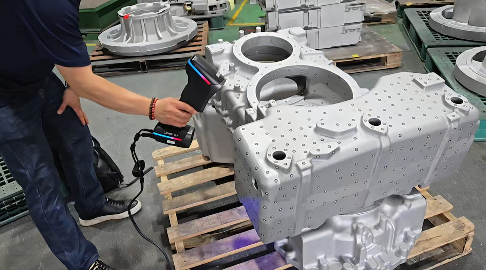

BLACK
정밀한 산업용 3D 측정을 위한 HandySCAN 3D 제품군
높은 수준의 측정 정밀도가 필요한 품질검사, 역설계 및 제품 개발 업무에 활용할 수 있습니다.
제조 현장에서 부품의 형상을 빠르고 정밀하게 취득하는 계측 등급 휴대형 3D 스캐닝 솔루션

Portable Metrology-Grade 3D Scanner
HandySCAN 3D는 제조 현장에서 부품과 제품의 형상을 빠르고 정밀하게 디지털 3D 데이터로 취득하는 Creaform의 휴대형 3D 스캐너 제품군입니다.
측정 대상과 작업 환경에 따라 BLACK, EVO, MAX 제품군을 선택할 수 있으며, 품질검사, 역설계, 제품 개발 등 다양한 산업용 3D 측정 업무에 활용할 수 있습니다.
HandySCAN 3D는 측정 대상의 크기와 작업 환경, 필요한 측정 범위에 따라 BLACK, EVO, MAX 제품군으로 구성됩니다.
정밀한 산업용 3D 측정을 위한 HandySCAN 3D 제품군
높은 수준의 측정 정밀도가 필요한 품질검사, 역설계 및 제품 개발 업무에 활용할 수 있습니다.
다양한 제조 환경의 3D 측정 업무를 위한 HandySCAN 3D 제품군
BLACK과 구분되는 별도의 제품군으로, 측정 대상과 작업 조건에 따라 적합한 모델을 선택할 수 있습니다.
더 긴 측정 거리와 대형 대상 측정을 위한 HandySCAN 3D 제품군
크기가 큰 부품과 구조물처럼 넓은 측정 범위가 필요한 작업에 활용할 수 있습니다.
휴대성과 정밀한 데이터 취득 성능을 기반으로 제조 현장의 다양한 3D 측정 업무를 지원합니다.
측정 대상물을 별도의 측정실로 이동하지 않고 필요한 현장에서 직접 측정할 수 있습니다.
품질검사와 제품 개발에 활용할 수 있는 정밀한 3D 형상 데이터를 취득합니다.
복잡한 부품 형상을 빠르게 스캔하여 전체 형상의 디지털 데이터를 효율적으로 확보합니다.
Creaform.OS 및 Metrology Suite와 연계하여 검사와 역설계 등 후속 작업으로 이어집니다.
HandySCAN 3D를 활용해 산업용 부품의 형상을 측정하는 과정을 영상으로 확인해보세요.
제품 개발부터 품질 관리까지 제조 현장의 다양한 3D 측정 업무에 활용할 수 있습니다.
실제 제작 부품의 형상을 측정하여 설계 데이터와 비교하고 품질 상태를 확인합니다.
CAD 데이터가 없는 기존 부품의 형상을 스캔하여 역설계와 모델링을 위한 데이터를 확보합니다.
시제품과 제작 부품을 측정하여 설계 검증과 제품 개발 과정에 활용합니다.
금형, 지그, 치공구 및 제조 부품의 형상 측정과 품질 관리에 활용합니다.
HandySCAN 3D로 취득한 측정 데이터는 Creaform.OS와 Metrology Suite를 통해 검사, 분석 및 역설계 작업으로 이어집니다.
부품의 3D 측정 데이터 취득
측정 장비 운용 및 데이터 취득
검사·역설계 및 측정 데이터 활용
측정 대상의 크기와 형상, 필요한 정확도 및 작업 환경을 확인하여 적합한 HandySCAN 3D 제품과 소프트웨어 구성을 안내해드립니다.
제품 문의하기 →